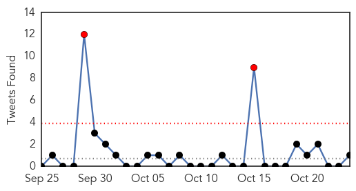

Unknown
30-Day Web Trend
0 alerts, 0 warnings

30-Day Twitter Trend
2 alerts, 0 warnings

Article Locations

Article Confidences

Top Articles:
- 0.985
- Information Page On Legionnaires' Outbreak Lawsuits Launched by Wright & Schulte LLC After 13 Deaths in Quincy Illinois
- 0.979
- Qatar
- 0.976
- Hand Foot and Mouth Disease Could Spike Among Kids
- 0.970
- Typhoid fever under control - Community
- 0.951
- 141 people sick in connection with San Jose restaurant
- 0.917
- Chicago Tribune
- 0.917
- Chicago Tribune
- 0.917
- Chicago Tribune
- 0.917
- Chicago Tribune
- 0.917
- Chicago Tribune
- 0.867
- Experts warn of Chagas' disease spread in Costa RicaThe Tico Times
- 0.852
- Flu spray in short supply
- 0.838
- Moderate year for Lyme disease in northern New England
- 0.838
- Nevada officials hope school break will stop norovirus
- 0.830
- Nobel Prize for medicine and our persistent ancient diseases
- 0.813
- TIMELINE: The #DeadBabiesScandal ... How the hospitals responded
- 0.807
- More than 600 fall ill during Royal Caribbean cruise
- 0.792
- Lyme disease cases drop off in northern New England
- 0.788
- Alzheimer’s symptoms can be managed
- 0.752
- MAJ head says ministry's response to bacteria outbreak raises questions
- 0.751
- WHO experts: Shift in vaccine use needed to eradicate polio
- 0.730
- Islamist candidate killed in Egypt’s Sinai
- 0.730
- Islamic State group claims responsibility for Bangladesh bombings
- 0.722
- UNICEF declares Somalia polio-free « Alshahid Network
- 0.718
- Rash of brain cancer cases in Indiana sparks probe
- 0.707
- Traveller community, inmates riot in southeast France
- 0.702
- Maldives vice president arrested over alleged assassination plot
- 0.702
- Israel, Jordan agree new security measures for flashpoint al-Aqsa mosque
- 0.702
- Monster hurricane Patricia slams Mexico Pacific Coast
- 0.682
- Karoun Cheese Listeria Outbreak Ends After Killing Three
- 0.663
- Cebu News, The Freeman Sections, The Freeman
- 0.657
- FBC News
- 0.656
- Neimann-Pick, Pick at Pune
- 0.643
- 'Arsenic exposure is associated with pediatric pneumonia in rural Bangladesh: a case control study' (Environmental Health)
- 0.642
- Polio in Ukraine: nationwide vaccination campaign needs to start straight away - Ukraine
- 0.630
- No healing touch: Overworked nurses escape to greener pastures
- 0.630
- Ukraine: Polio in Ukraine: nationwide vaccination campaign needs to start straight away
- 0.611
- Did You Touch This Bat? It Has Rabies
- 0.593
- Aghanistan: Death toll from the MSF hospital attack in Kunduz still rising
- 0.587
- Georgetown County School District: 24 Andrews, Rosemary students treated for skin conditions resulting from flood water
- 0.567
- WDAM-TV 7-News, Weather, Sports-Hattiesburg, MS
- 0.557
- U.S. Citizens March on CDC Headquarters in Atlanta to Protest Vaccine Science Corruption
- 0.538
- Indonesia readies warships for haze evacuation
- 0.519
- Indonesia readies warships for haze evacuation
- 0.508
- Binagwaho wins $100,000 Roux Prize News Of Rwanda – Rwanda News
- 0.502
- SFBay :: San Francisco Bay Area News and Sports
Top Tweets:
- 0.815
- “We have successfully identified flu outbreaks six weeks or more ahead of the Centers for Disease Control" https://t.co/JjEsHImscC
- 0.780
- RT: Piensa en esto: cuando te regalan un reloj te regalan un pequeño infierno florido, una cadena de rosas, un calabozo de …
- 0.736
- Vivimos en un instante cósmico.
- 0.712
- RT: Grecia siendo un país con unas de las peores economías del mundo no tiene gente haciendo colas todos los días en un supe…
- 0.690
- RT: El avance de un país también se puede medir en las políticas preventivas ante desastres naturales. Ej: México, Chile y …
Measles
30-Day Web Trend
1 alerts, 0 warnings

30-Day Twitter Trend
0 alerts, 0 warnings

Article Locations

Article Confidences

Top Articles:
Top Tweets:
-
No tweets found for Oct 24, 2015